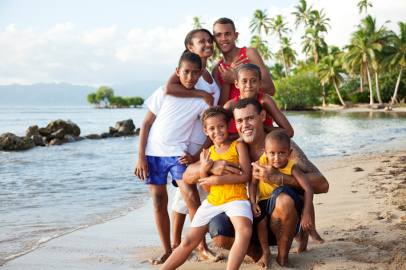

A bandeira de Fiji apresenta um fundo azul com a união do Reino Unido no canto superior esquerdo, simbolizando a relação histórica entre Fiji e o Reino Unido. O brasão de armas central exibe elementos que representam a cultura e a agricultura do país, como uma planta de cana-de-açúcar, um coqueiro e um boi.
O azul representa o oceano que cerca as ilhas, enquanto as imagens do brasão refletem a biodiversidade e a agricultura essenciais para a economia de Fiji. A bandeira foi adotada em 10 de outubro de 1970, quando Fiji se tornou uma república independente, refletindo a identidade cultural do país.
Sobre Fiji
Fiji é um arquipélago localizado no Pacífico Sul, composto por mais de 300 ilhas, conhecidas por suas belas praias, águas cristalinas e rica cultura. A capital é Suva, situada na ilha de Viti Levu, a maior do país.
A geografia de Fiji é diversificada, com montanhas, florestas tropicais e recifes de coral. O clima tropical proporciona temperaturas quentes durante todo o ano, com uma estação chuvosa de novembro a abril.
As atividades populares em Fiji incluem mergulho, snorkeling, caminhadas em trilhas na selva, e conhecer a cultura local através de festivais e danças tradicionais.
Atrações Principais
Ilha de Viti Levu
Ilha de Vanua Levu
Parque Nacional de Bouma
Recifes de Coral
A Ilha de Viti Levu é a maior ilha de Fiji, com uma rica biodiversidade e várias atrações turísticas, incluindo o Parque Nacional de Bouma e a cidade de Nadi, onde se encontra o famoso Templo de Sri Siva Subramaniya.
É também o ponto de partida para explorar outras ilhas e desfrutar de atividades como rafting, caminhadas e experiências culturais.
A Ilha de Vanua Levu é a segunda maior ilha de Fiji, conhecida por suas florestas tropicais exuberantes e belas praias. A cidade de Labasa é o centro administrativo da ilha.
É famosa por suas atividades de ecoturismo, mergulho e snorkel nos recifes de coral. Os visitantes também podem explorar as aldeias locais e experimentar a cultura fijiana autêntica.
O Parque Nacional de Bouma está localizado na ilha de Taveuni e é conhecido por suas trilhas cênicas, cachoeiras e rica biodiversidade. É um ótimo local para caminhadas e observação da vida selvagem.
Os visitantes podem desfrutar de atividades como natação nas cachoeiras, caminhadas em meio à floresta tropical e exploração da flora e fauna únicas da região.
Os recifes de coral de Fiji são famosos por sua beleza e diversidade marinha. Eles são um dos destinos de mergulho mais procurados do mundo, com águas claras e vida marinha vibrante.
Os recifes oferecem excelentes oportunidades para snorkeling, mergulho e observação de peixes tropicais, tartarugas e corais coloridos. É um lugar ideal para explorar a vida submarina e apreciar a beleza natural do Oceano Pacífico.
Cultura Fijiana
A cultura de Fiji é vibrante, com tradições que incluem danças, música e festivais. Os habitantes locais são conhecidos pela sua hospitalidade e pela prática do "kava", uma bebida tradicional feita a partir da raiz de uma planta local.
A dança fijiana, chamada "meke", é uma parte essencial das celebrações culturais e é frequentemente acompanhada por músicas tradicionais, que incluem instrumentos como o "lali" (tambor) e a "bongo".
A gastronomia de Fiji é diversificada, destacando-se pratos à base de frutos do mar, frutas tropicais e vegetais. Um prato popular é o "kokoda", feito com peixe marinado em suco de limão e leite de coco.
Fiji possui um clima tropical, com temperaturas médias variando entre 20°C e 30°C. A estação chuvosa vai de novembro a abril, enquanto a estação seca ocorre de maio a outubro.
A vegetação de Fiji é rica e diversificada, com florestas tropicais, plantas endêmicas e extensos recifes de coral. A ilha possui diversas espécies de árvores, incluindo a árvore de pão e coqueiros.
O relevo de Fiji é montanhoso, com várias ilhas apresentando picos altos e vales profundos, criando paisagens deslumbrantes. As ilhas são formadas principalmente por rochas vulcânicas.
A fauna de Fiji é diversa e única, com várias espécies endêmicas. Destacam-se aves coloridas, como o kākā, e morcegos, além de uma rica vida marinha em recifes de corais, com peixes tropicais e tartarugas.
As florestas abrigam lagartos e borboletas. Essa biodiversidade enfrenta ameaças, tornando a conservação essencial.
A população de Fiji é de aproximadamente 900.000 habitantes, composta principalmente por fijianos indígenas, descendentes de indianos e uma pequena porcentagem de outras etnias.
O Índice de Desenvolvimento Humano (IDH) de Fiji é considerado médio, com um valor em torno de 0,7, refletindo melhorias nas áreas de saúde, educação e renda.
Fiji é uma república parlamentar, com um sistema político democrático. O Presidente é o chefe de estado, enquanto o Primeiro-Ministro é o chefe de governo.
Constituição: A Constituição de 2013 é a base legal do país, garantindo direitos fundamentais e estabelecendo os princípios do governo democrático.
Separação dos Poderes: O governo é dividido em três poderes: Executivo, Legislativo e Judiciário, assegurando um sistema de freios e contrapesos.
Direitos Humanos: A Constituição garante direitos e liberdades fundamentais, incluindo liberdade de expressão, de associação e de religião.
Eleições Justas: As leis garantem a realização de eleições livres e justas, com um sistema de votação proporcional.
Governo Local: Existem disposições para a administração descentralizada, permitindo que comunidades locais participem da governança.
O PIB de Fiji é estimado em cerca de 5 bilhões de dólares, com o turismo como principal motor econômico, seguido pela agricultura e pesca. O PIB per capita é de aproximadamente 5.800 dólares, refletindo desafios como a diversificação econômica e a adaptação às mudanças climáticas.
A moeda oficial de Fiji é o dólar fijiano (FJD). Em relação à conversão, 1 dólar fijiano costuma valer cerca de 2 a 3 reais brasileiros.
Média de Gastos em Fiji
A média de gastos em Fiji pode variar bastante dependendo do estilo de viagem. Aqui está uma estimativa:
Acomodações
Econômicos: $30 a $80 por noite.
Médio porte: $100 a $200 por noite.
Luxuosos: $300 a $600 por noite.
Alimentação
Restaurantes locais: $10 a $20 por refeição.
Restaurantes de médio porte: $20 a $50 por refeição.
Transporte
Transporte local: $1 a $5 por viagem.
Aluguel de carro: $40 a $80 por dia.
Atividades
Excursões e passeios: $50 a $150 por dia, dependendo da atividade.
Estimativa Mensal
Econômica: cerca de $1.500 a $2.000.
Médio porte: cerca de $3.000 a $4.500.
Luxo: $6.000 ou mais.
Esses valores são aproximados e podem variar conforme a época do ano e as escolhas individuais.
Público-Alvo do Turismo em Fiji
Turistas em Busca de Relaxamento
Pessoas que desejam férias tranquilas em praias paradisíacas e resorts de luxo.
Aventureiros
Viajantes interessados em atividades como mergulho, snorkeling, caminhadas e esportes aquáticos.
Casais e Lua de Mel
Casais atraídos por paisagens deslumbrantes e ambiente romântico.

Famílias
Famílias em busca de experiências culturais e atividades ao ar livre em um ambiente seguro.
Ecoturistas
Visitantes que desejam explorar a biodiversidade e participar de atividades sustentáveis.
Apreciadores da Cultura
Viajantes interessados em aprender sobre a rica cultura fijiana, incluindo tradições e culinária.
Vantagens e Desvantagens de Visitar Fiji
Vantagens
Belezas Naturais: Praias paradisíacas, águas cristalinas e recifes de corais deslumbrantes.
Cultura Rica: Tradicional e vibrante, com danças e festivais autênticos.
Clima Tropical: Quente e ensolarado durante todo o ano.
Atividades Diversificadas: Mergulho, snorkeling, trilhas e experiências culturais.
Hospitalidade: Fijianos são conhecidos por sua calorosa e amigável hospitalidade.
Desvantagens
Custo: Viagens e hospedagem podem ser caros.
Acesso Limitado: Algumas ilhas são de difícil acesso, exigindo transporte adicional.
Períodos de Chuva: Estação chuvosa de novembro a abril pode trazer chuvas intensas.
Infraestrutura em Desenvolvimento: Em algumas áreas, a infraestrutura pode ser limitada.
Impacto Ambiental: O turismo pode afetar negativamente a biodiversidade local.


.jpeg)